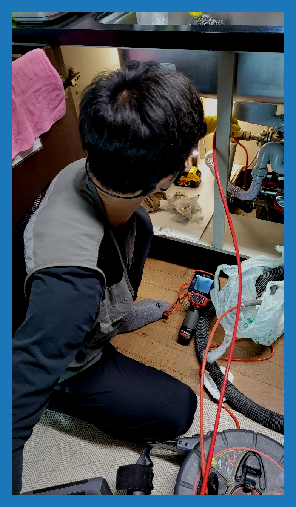
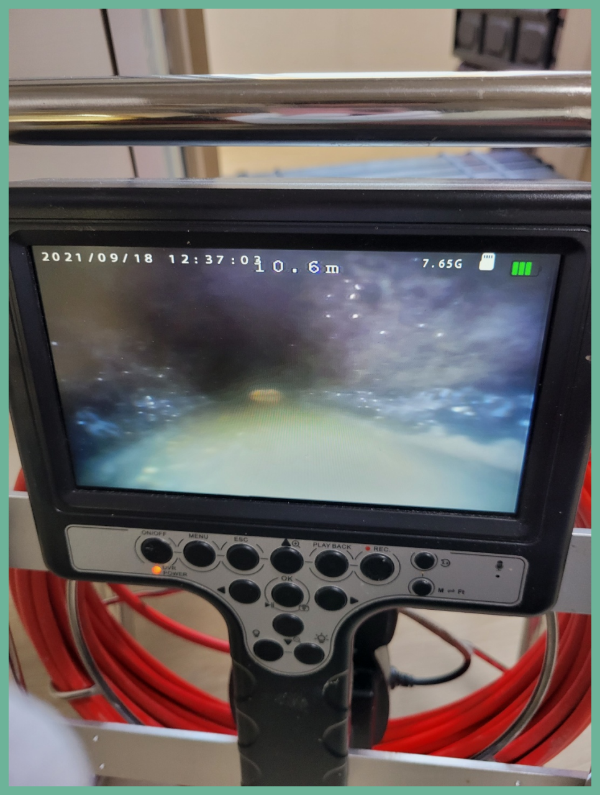
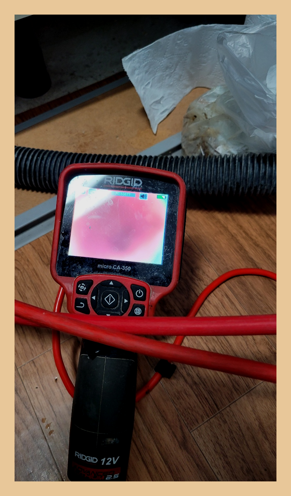
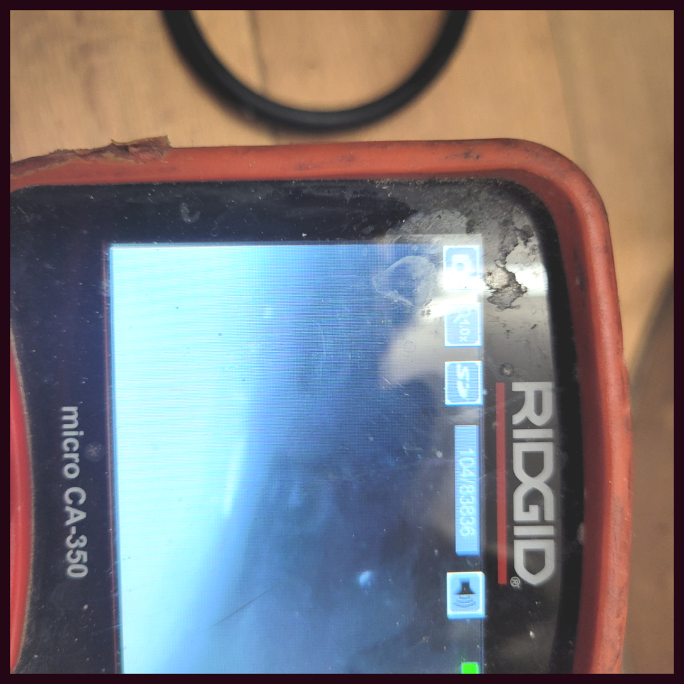
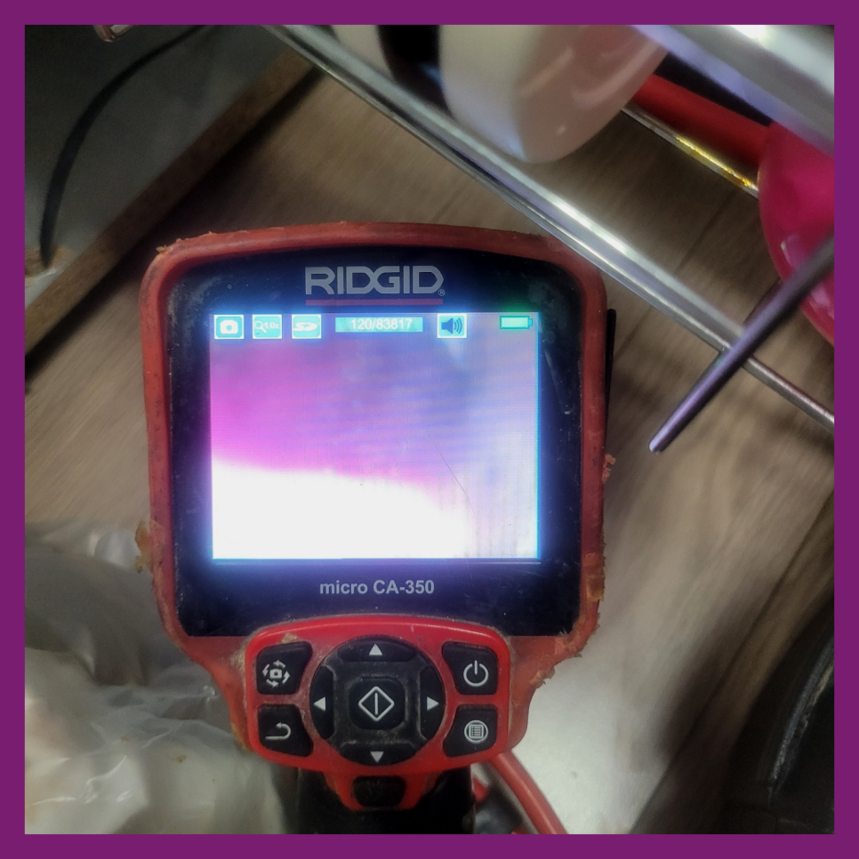
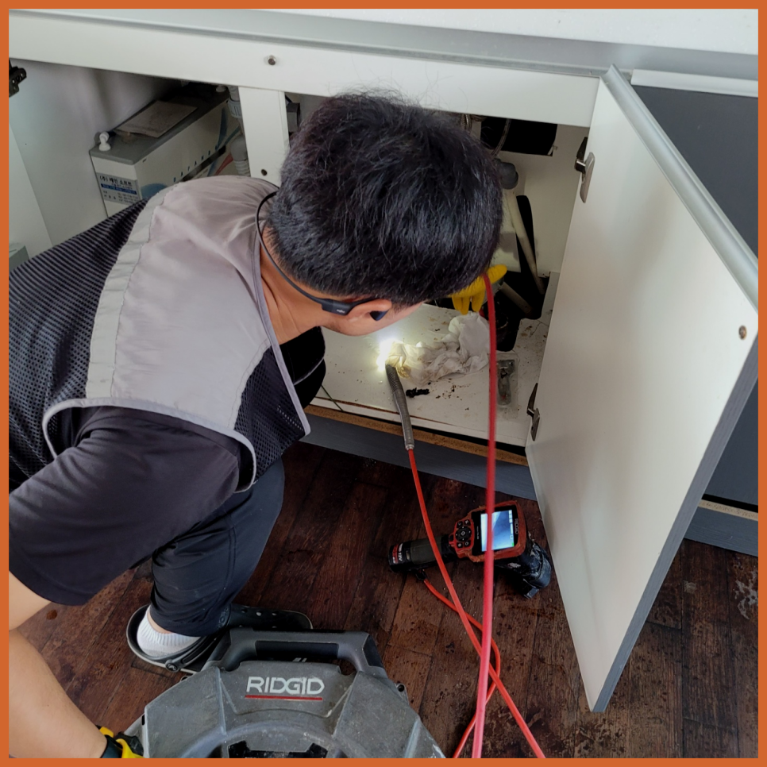

🏠 은평구 녹번동 싱크대배수관막힘 대조동 배수구역류 뚫음 수리
용인 싱크대막힘 전문 시공 후기

📋 작업 개요
- 위치: 용인
- 서비스 유형: 싱크대막힘, 변기막힘, 하수구막힘, 배관막힘, 역류해결, 뚫는업체, 배관청소, 고압세척
- 작업 일시: 2024. 1. 7. 21:54
- 업체명: 하수구수사대 (010-5615-2118)
🔍 문제 상황
반갑습니다!
설비전문업체 "하수구수사대"를 찾아주셔서 고맙습니다^^
배관속에 사용했던 들어오면 괜찮지만 물 뿐 아니라 오만 이물질이 함께 흘러 들어가기때문에 이것을을 제대로 처리해줘야 합니다. 관으로 들어가버린 다양한 종류의 갖은 잡다한 물질들이 외부로 배출되지 못하면 하수관막힘증상이 나타날수 있어요.
은평구 녹번동 싱크대배수관막힘 대조동 배수구역류 뚫음 수리

🔎 원인 분석
💡 전문가 진단: 은평구 녹번동 싱크대배수관막힘 대조동 배수구역류 뚫음 수리
배출구 문의하는 입장이라면 맡기는 사람이 출중한 실력을 갖추고 뒤끝없이 해결하시기를 바라실 텐데 그게 아니라면 골치 아픈 것이 사실입니다. 실제로도 믿고 맡겼다가 피해를 입으신 사연이 많은 것을 볼때 상상보다 흔한 일이라는 것을 유추가 가능합니다.
필요한 시공만 하기에 작업내내 고객님과 상의를 많이 한후 그에맞게끔 배관막힘 작업하고 있습니다. 그로인해 얼마든지 맡겨만 주시면됩니다. 배관를 뚫을때 변수가 워낙 다양하기 때문에 모든 배관배관을 파악한 후 무슨 장비를 이용할지 선택후 배관작업을 하기에 본격적으로 작업하기전 비용을 알려드리고 있어요.
많은 사례들 중에서 최근에 출동해서 다녀온 퇴수 막힘 건에 대해서 소개해 드리도록 하겠습니다. 고객님께서는 자택에 있는 화장실 퇴수가 막혔다고 연락을 주셨습니다. 방문하여 상황을 살펴보면 확인해 보니 일단 배수가 잘 이루어지지 않아서 화장실 바닥에 물이 고여있는 상태였습니다.
막힘 증상은 느닷없이 발생된 것은 아니고 막힘의 전조증상이 보이면서 심각한 하수막힘으로 전환이 되는 것입니다. 의뢰인께서 하수막힘을 인식 못하셔서 줄곧 이용을 하다가 오물 덩어리가 배관으로 흘러 들어가 쌓이면서 심한 막힘이 나타나는겁니다.
그러므로 반드시 전문 업체를 통해서 해결을 하시는 것이 필요하다고 할 수 있습니다. 그래서 하수막힘 현장에 도착을 하고 나서 배관의 상태를 보니 이미 고객님 댁에서는 하수의 역류로 인해서 큰 불편함을 입고 있었습니다.

🔧 작업 과정
일단 자체적으로 해보고 안된다면 전문업체에 의뢰하는 것이 가장 이상적은 방법이라고 할 수 있어요. 배출관막힘으로 인해 문제가 생긴 다면 추후 더 골치 아파지는 상황이 발생할 수 있기때문입니다.
물을 틀어도 전혀 흘러내려가지 않는 모습이었습니다. 저희는 배관배관 내부가 무언가로 인해 꽉 막혔다는 걸 짐작할 수 있었습니다. 고객님께 충분한 설명을 드린 뒤 배수관을 해체해 내부를 살펴보았는데요. 내부가 깨끗한 편은 아니었지만 이물질들이 그렇게 많진 않았습니다.
플랙스샤프트는 장비 전체를 회전하는 방식으로 배출구배관에 쌓인 채로 굳어진 오염물질을 분쇄하도록 도와주는 장비입니다. 강한 힘으로 단단하게 달라붙은 이물질과 석회를 부숴주어야 배출구배관이 정상적으로 기능할 수 있습니다. 일반적으로 플랙스샤프트로 이물질을 작게 부순 다음 석션으로 흡입하여 제거해 주면 됩니다.
퇴수구 작업가능 기사가 소수이거나 지리적인한계가있다면 내방할수있는곳과 현장도착까지의시간에 제한이생기겠죠? 저희의경우는 전국여러지역에 뛰어난실력자인 퇴수구 베테랑들이 의뢰자분의 고민들을해결하고있어요. 계신곳이어디라도 방문할수있는시스템들을 갖추고있기에 불러주신다면 1시간내로 내방하고있습니다
하수도막힘으로인해 이러지도 저러지도못한다면 곧장 출동해서 해결해드리고있으니 언제든지 전화만해주세요.저희팀은 하청업체가 절대아니며 경력있는분들로만 구성돼있는 시스템들이 짜여져있답니다.
전문기사의 실력으로 빠르게 고치실수있던것도 위와비슷한 문제때문에 증상이더 나빠지게됩니다.돈을아끼기위해서 할수있다면 배수뚫으실려고 하는생각들을 지양하셔야합니다.
하수문제를 해결하기 위하여 고객님께 해당 방법에 대하여 안내해 드렸습니다. 우선 아래에 쌓인 이물질을 제거하기 위하여 석션기를 이용하여 하수작업했습니다. 이렇게 석션기를 이용하면 주변을 강하게 압박하면서 이물질을 한 번에 흡입하므로 수월하게 제거할 수 있습니다.


✅ 작업 완료
세척을 끝내고 배관에 돌아가 많은 양의 물을 한 번에 부어보니 작은 소용돌이 모양을 만들며 빠르게 내려가는 것으로 확인되었습니다. 배관내시경을 통해서도 외부까지 연결된 배관배관 상태가 말끔해진 것을 체크하였고, 이후 마감 작업까지 꼼꼼하게 해드렸습니다.
#하수구막힘 #하수구뚫음 #하수구역류 #씽크대막힘 #싱크대역류 #오수관막힘 #하수구청소 #욕실하수구막힘 #변기막힘 #하수구뚫는비용 #싱크대수리 #화장실막힘




⚠️ 주방 싱크대 배관 막힘 예방 수칙
- ✅ 기름기가 묻은 식기나 프라이팬은 설거지 전 키친타올로 반드시 기름때를 닦아내세요.
- ✅ 주기적으로 싱크대 개수대에 뜨거운 물을 가득 받아 한 번에 내려 배관 내부 기름을 씻어내세요.
- ✅ 배수구 거름망을 미세한 필터로 사용하시고 음식물 찌꺼기가 틈으로 새어 들지 않게 관리하세요.
- ✅ 베이킹소다와 식초를 뜨거운 물과 함께 일주일에 한 번씩 부어주면 배관 살균과 막힘 예방에 좋습니다.
💡 핵심 정리
- 확실한 장비 작업(내시경 점검 및 샤프트 스케일링)으로 원인을 뿌리 뽑습니다.
- 작업 후 1년 이내에 동일한 부위 재발 시 100% 무상 A/S 서비스를 보장합니다.
- 서울 · 경기 · 인천 전 지역에 24시간 언제든 긴급 출동할 수 있도록 항시 대기 중입니다.
❓ 자주 묻는 질문 (FAQ)
🚨 용인 싱크대막힘 문제로 고민이신가요?
정확한 원인 진단과 확실한 시공으로 재발 없는 해결을 약속드립니다.
24시간 긴급 출동 | 서울 · 경기 · 인천 전지역 | 1년 내 재발 시 무상 A/S